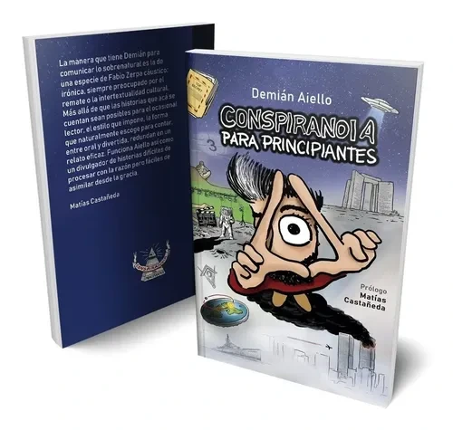

Lanzamiento editorial
El humor
de los mercados
Chistes y viñetas sobre esa locura hermosa que llamamos mercado financiero.
Conocé el libroLanzamiento editorial
Chistes y viñetas sobre esa locura hermosa que llamamos mercado financiero.
Conocé el libroEsta colección es una embajada cultural donde un terrícola apasionado le revela a un visitante de otro mundo los mayores hitos de nuestra inteligencia y arte. No es un manual técnico, sino el testimonio definitivo de lo que logramos construir cuando nos atrevimos a pensar, narrar y conmovernos. Si una inteligencia ajena pregunta alguna vez qué fuimos, aquí están las pruebas: devueltas al universo como la mayor demostración de que valió la pena existir.
10 conceptos financieros que todo extraterrestre debe conocer
10 conceptos económicos que todo extraterrestre debe conocer
10 conceptos inmobiliarios que todo extraterrestre debe conocer
10 conceptos de cultura pop que todo extraterrestre debe conocer
10 conceptos de estructuración patrimonial que todo extraterrestre debe conocer
10 conceptos de Bitcoin que todo extraterrestre debe conocer
10 conceptos de IA que todo extraterrestre debe conocer
10 conceptos de filosofía que todo extraterrestre debe conocer
10 conceptos de marketing que todo extraterrestre debe conocer
10 conceptos de física cuántica que todo extraterrestre debe conocer
10 conceptos matemáticos que todo extraterrestre debe conocer
10 conceptos cinematográficos que todo extraterrestre debe conocer
10 conceptos mitológicos que todo extraterrestre debe conocer
10 conceptos literarios que todo extraterrestre debe conocer
10 conceptos de las bellas artes que todo extraterrestre debe conocer
10 conceptos del cómic que todo extraterrestre debe conocer
10 conceptos de los videojuegos que todo extraterrestre debe conocer
10 conceptos astronómicos que todo extraterrestre debe conocer
10 conceptos de animación que todo extraterrestre debe conocer
10 conceptos gastronómicos que todo extraterrestre debe conocer
10 conceptos religiosos que todo extraterrestre debería conocer

Una aproximación irreverente a las teorías, los patrones y las explicaciones que aparecen cuando nadie entiende del todo qué está pasando.
Tres ediciones.